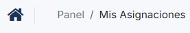
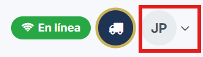
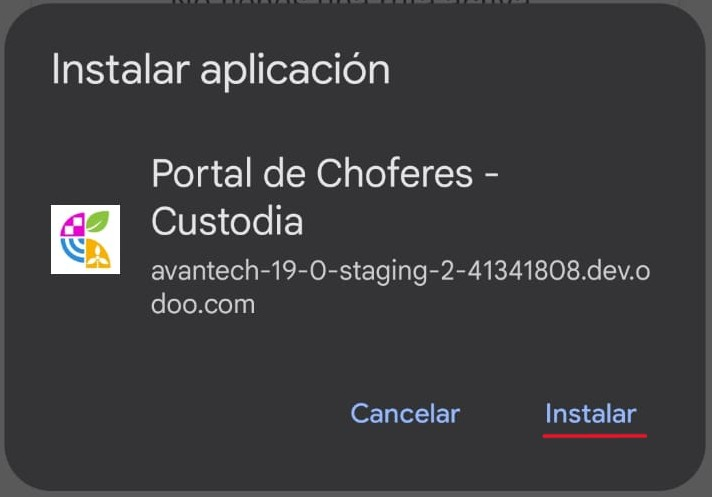
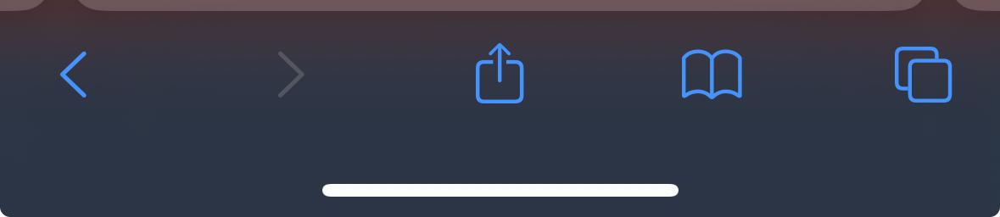
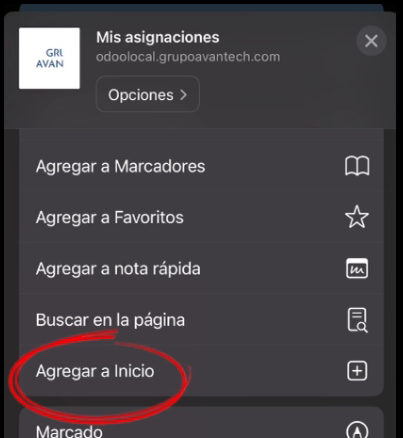
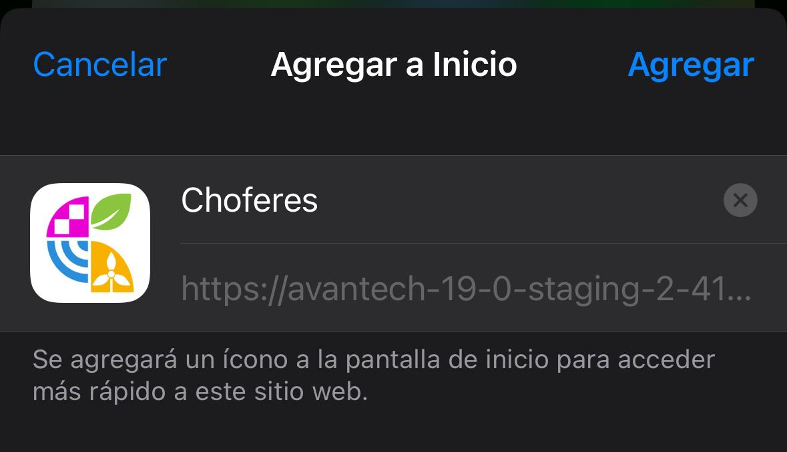

1. Instalación de la Aplicación en tu Celular
La app de Choferes se instala directamente desde la web.






Demostración de instalación
Clic para ampliar demostración2. Requisitos antes de salir a ruta
La aplicación está diseñada para funcionar con o sin conexión a internet, pero antes de salir del almacén es indispensable cumplir con los siguientes requisitos:
Inicio de sesión con conexión
¡Antes de salir del almacén, debes abrir la aplicación mientras tengas conexión a internet (Wi-Fi o datos móviles) e iniciar sesión!
Acceso a la ubicación del celular
Es importante aceptar y permitir el acceso a la ubicación (GPS) cuando el navegador o la aplicación lo solicite.
Acceso a Ubicación
Clic para ampliar demostración3. Cuando tienes conexión a internet
Cuando tu celular cuente con conexión a internet, verás en la parte superior derecha de la aplicación un indicador verde con el estado: En línea
Sincronización inmediata con el sistema
Modo En Línea
Clic para ampliar demostración4. Cuando no tienes conexión a internet
Si tu celular pierde la conexión a internet, el indicador cambiará a color amarillo y mostrará un icono de avión junto con el estado: Sin conexión
La diferencia es que la información que registres, como fotografías, firmas y término de la ruta, se almacenará temporalmente en tu dispositivo.
Indicador de Pendientes
PendientesModo Sin Conexión (Offline)
Clic para ampliar demostración5. Sincronización de información
Cuando tu celular recupere la conexión a internet, la aplicación detectará automáticamente que hay información pendiente y comenzará el proceso de sincronización.
Proceso de sincronización
SincronizandoUna vez finalizada la sincronización:
- El contador de registros pendientes desaparecerá.
- La aplicación mostrará un mensaje de confirmación indicando que la información se sincronizó correctamente.
Cuando tu celular recupere la conexión a internet, deberás abrir la aplicación para que se inicie automáticamente el proceso de sincronización. Mantén la aplicación abierta hasta que finalice y aparezca el mensaje de confirmación.
Sincronización de información
Clic para ampliar demostración